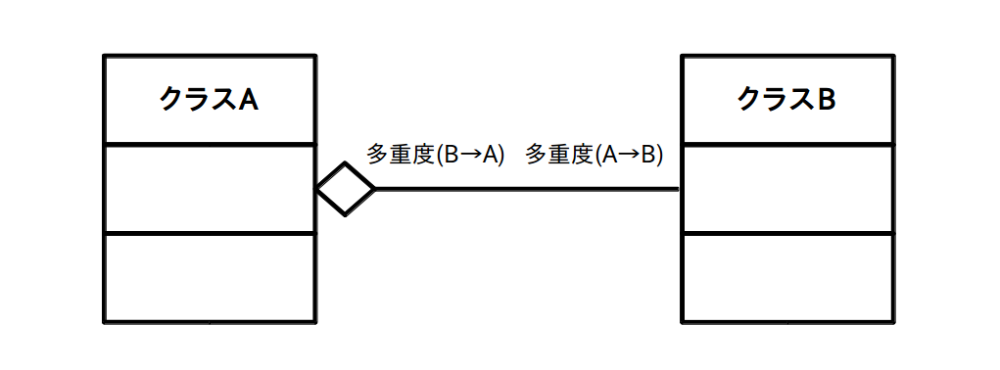
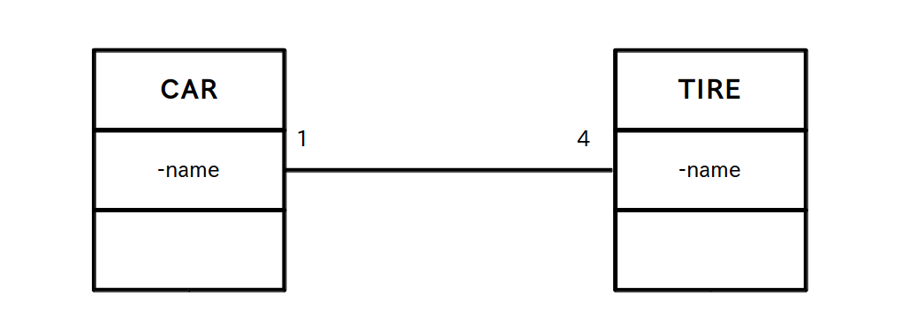
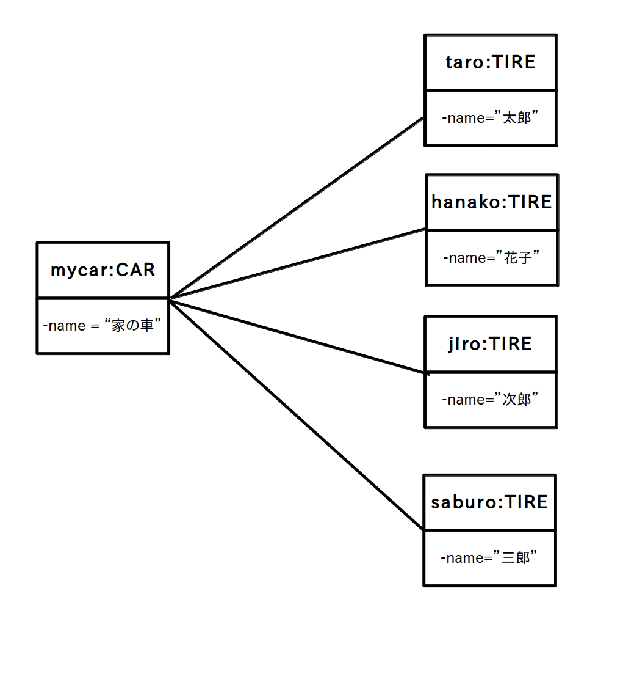
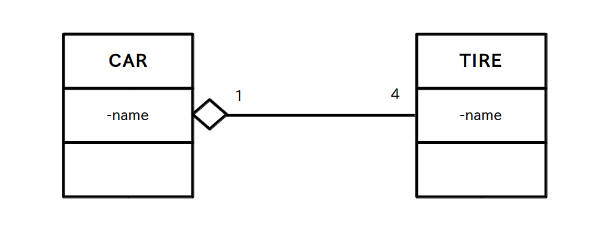

集約 (has a 関係)
クラス図の話に戻って、今度は「関連」の一種である「集約」について学びます。
「集約」は「あるクラスが他のクラスを所有している」「他のクラスから構成されている」などの主従関係を明確に示すために使われます。
「集約」をクラス図で表す場合は所有する側のクラスに中抜きのダイヤマークを付けます。
図1 集約のクラス図の基本 (クリックで拡大)

この関係を英語で書くと
A has a B (AはBを持っている)
となりますので、「集約」は別名「has a 関係」とも言います。
例えば、これまで使ってきた関連のクラス図の例
図2 関連のクラス図の例 (クリックで拡大)

は常識的に考えれば
「1台の車にはタイヤが4個ついている」
又は
「1個のタイヤは1台の車に取り付けられている」
事を意味していますが、実は TIRE がタイヤではなくて外国人の TIRE 家の人達だったら意味が全く変わって、
「TIRE 家に住む 4 名が 1 台の車をシェアしている」
又は
「1台の車はTIRE家に住む 4 名の所有物である」
という意味になります(図3)。
図3 TIRE が苗字だった時のオブジェクト図 (クリックで拡大)

従って TIRE は CAR を構成する4個のタイヤであるという事を明確にしたい場合は、CAR 側に中抜きダイヤを付けて集約にする必要があります(図4)
図4 集約のクラス図の例 (クリックで拡大)

なお、中抜きダイヤマークが多いと図が見辛くなるので、主従関係が明らかな場合は中抜きダイヤマークを省略して「関連」だけ使う場合もあります。
どの状況では「関連」を使って、どの状況では「集約」を使うべきかという具体的な決まりは特にありませんので、自分でやり易いやり方を見つけたり、所属するチームのやり方に従って下さい。